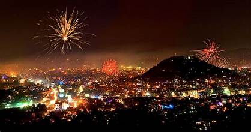
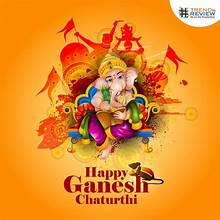

ü™î Fairs and Festivals of Andhra Pradesh ‚Äì A Celebration of Culture and Tradition üéâ
üïâÔ∏è Religious Festivals ‚Äì Echoes of Devotion and Spirituality

Ugadi (Telugu New Year) – Welcomes the dawn of a new year with the sweet-sour-bitter taste of life, celebrated through vibrant rangolis, mango leaf decorations, and the traditional Ugadi Pachadi.
Makar Sankranti (Pongal) – A joyous harvest celebration where the skies come alive with colorful kites, homes are adorned with intricate muggulu (kolams), and sugarcane sweetens the festive spirit.

Dussehra (Vijayadashami) – The grandeur of good triumphing over evil unfolds with majestic processions, artistic performances, and fervent prayers to Goddess Durga.
Diwali (Deepavali) – A dazzling spectacle of lights and fireworks, illuminating homes and hearts, symbolizing the eternal victory of light over darkness.


Ramzan (Eid-ul-Fitr) – A soulful conclusion to Ramadan, marked by heartfelt prayers, communal feasts, and the spirit of generosity.

Christmas – An enchanting season filled with merry carols, sparkling lights, and the warmth of togetherness, especially among coastal Christian communities.
Maha Shivaratri – A night of divine energy where devotees immerse themselves in deep meditation and prayers to Lord Shiva.


Vinayaka Chaturthi – Streets resonate with chants of Ganapati Bappa Morya! as devotees welcome and bid farewell to Lord Ganesha with grandeur.
üåæ Harvest and Agricultural Festivals ‚Äì Celebrating Nature‚Äôs Bounty
Pongal (Sankranti) – A four-day extravaganza of gratitude to the Sun God, marked by bonfires, delicious offerings, and joyous gatherings.

Rythu Panduga – An ode to the hardworking farmers, honoring their dedication with prayers for prosperity.
Karthika Masam – A month-long spiritual journey where devotees light lamps and offer prayers by rivers, invoking divine blessings.
üé≠ Cultural and Folk Festivals ‚Äì A Kaleidoscope of Heritage
Tirupati Brahmotsavam – A celestial celebration where Lord Venkateswara’s idols are paraded majestically amidst chants and vibrant processions.
Lumbini Festival – An ode to Andhra Pradesh’s rich Buddhist heritage, bringing alive the teachings of Lord Buddha at Nagarjunakonda and Amaravati.
Deccan Festival – A lively display of Hyderabadi culture, cuisine, and crafts, making it a sensory delight.
Visakha Utsav – A vibrant coastal carnival in Visakhapatnam, showcasing the region’s art, cuisine, and traditions.


Rayalaseema Food and Dance Festival – A flavorful and rhythmic celebration that pays tribute to the folk arts, cuisine, and culture of the Rayalaseema region.
üïäÔ∏è Tribal and Folk Fairs ‚Äì Echoes of Ancient Traditions

Sammakka Saralamma Jatara (Medaram Jatara) – India’s largest tribal congregation where devotees seek the blessings of Goddess Sammakka and Saralamma, in a display of raw spiritual energy.
Kondareddy Buruju Festival – A celebration of tribal valor and courage, where folk dances and vibrant processions captivate onlookers.
Giri Pradakshina – A sacred tribal tradition where devotees circumambulate the Simhachalam hills, seeking divine grace.
üõï Temple Festivals ‚Äì Sacred Grandeur and Divine Bliss

Pushkaram Festival – A celestial river festival held every 12 years along the Godavari and Krishna rivers, attracting millions for a holy dip.
Simhachalam Chandanotsavam – An annual spectacle where the idol of Lord Narasimha is anointed with fragrant sandalwood paste.


Srisailam Maha Shivaratri – Devotees throng the Srisailam temple to seek blessings from Lord Mallikarjuna during this auspicious time.
üé® Arts and Crafts Festivals ‚Äì A Showcase of Creativity

Shilparamam Crafts Festival – A vibrant tapestry of handicrafts, folk art, and traditions that celebrate local artisans.
Kuchipudi Dance Festival – An enchanting extravaganza where the grace of Kuchipudi dance comes alive, captivating audiences with its elegance.

All India Industrial Exhibition (Numaish) – A melting pot of culture and commerce, showcasing everything from handicrafts to modern innovations.
Tirupati Annual Fair – A divine confluence of faith, devotion, and tradition that unfolds during Brahmotsavam.

Kakinada Beach Festival – A delightful beachside celebration blending culture, music, and fun.